Psicofarmacología: ¿cómo actúan los fármacos en el cerebro?
Objetivos de aprendizaje
- Adquirir conocimientos y comprensión sobre cómo los fármacos ingresan al organismo y sobre el curso temporal de sus efectos
- Adquirir una comprensión básica de cómo las clases generales de fármacos interactúan con las neuronas para alterar su función.
Tras haber aprendido cómo se comunican las neuronas del cerebro, ahora vamos a considerar cómo los fármacos pueden afectar su función.
En un ejemplo ficticio, Sam tiene colesterol alto y trastorno por déficit de atención e hiperactividad (TDAH). Para ayudar a aliviar sus síntomas, el médico de cabecera le receta atorvastatina para reducir el colesterol, mientras que un psiquiatra le receta lisdexanfetamina para ayudar a mejorar la atención.
Tanto la atorvastatina como la lisdexanfetamina se consideran fármacos. Quienes diseñan fármacos e investigan cómo actúan en el organismo suelen llamarse farmacólogos (estudian la farmacología). Mientras que un farmacólogo general podría explorar el uso de la atorvastatina o de la lisdexanfetamina, quien investiga la psicofarmacología podría interesarse más por comprender cómo la lisdexanfetamina puede reducir los síntomas del TDAH.
Estos científicos no solo desarrollan fármacos u observan cambios en los síntomas después de la administración; ¡también se plantean muchas otras preguntas! Por ejemplo, un psicofarmacólogo puede considerar lo siguiente:
- ¿Sobre qué partes del cerebro actúa un fármaco?
- ¿Un fármaco produce su efecto porque interactúa con un tipo específico de receptor?
- ¿Cómo afecta a la biología cerebral la administración prolongada de un fármaco?
- Después de tomar un fármaco, ¿cuánto duran sus efectos?
- ¿Se puede modificar la estructura química de un fármaco para que sus efectos se prolonguen?
- ¿Administrar el medicamento de cierta manera (p. ej., por vía oral frente a la nasal) mejoraría la capacidad del fármaco para actuar sobre el cerebro?
- ¿Podría la biología cerebral explicar por qué existe variación individual en la capacidad de los fármacos para mejorar ciertas afecciones?
A partir de tus conocimientos de neurobiología, este capítulo va a explorar los conceptos necesarios para comprender cómo un psicofarmacólogo podría abordar estas preguntas.
Clasificación de los fármacos
Antes de explorar cómo actúan los fármacos en el organismo y en el cerebro, es necesario aclarar cómo nos referimos a los distintos fármacos; puede resultar confuso, porque ciertos compuestos pueden recibir nombres diferentes. Por ejemplo, un psicofarmacólogo puede describir el metilfenidato como un psicoestimulante (o una fenetilamina) y como un inhibidor de la recaptación de noradrenalina y dopamina. En cambio, un químico podría referirse al fármaco por su estructura química: C14H19NO2. Además, un psiquiatra podría recetar el metilfenidato como «Ritalin», y el gobierno del Reino Unido (2022) podría referirse a él como una «sustancia controlada de clase B» (que conlleva penas severas por la posesión ilegal y por la intención de suministrarla). Si bien es probable que lo que sigue no sea una lista exhaustiva de métodos para categorizar los fármacos, en términos generales se los puede designar de las siguientes maneras:
- Origen
- Estructura química
- Mecanismo de acción relativo en el cerebro
- Uso o efecto terapéutico
- Nombres comerciales
- Estatus legal o social
Ahora vamos a centrarnos en tres de estas categorías, con las que es probable que te encuentres en tus estudios de psicología biológica.
Clasificación según el origen

Los fármacos provienen de lugares diversos: algunos son de origen natural y otros se crean en el laboratorio. La cocaína (C17H21NO4) es un ejemplo de droga de origen natural, porque se extrae directamente de las hojas de la planta de coca. El opio también es de origen natural y se obtiene de las cápsulas inmaduras de la amapola del opio. En otras palabras, todas las moléculas que confieren a la cocaína y al opio sus propiedades psicoactivas ya están presentes en la propia planta.
Los fármacos semisintéticos derivan químicamente de sustancias de origen natural. Un ejemplo de droga semisintética es la heroína (una molécula modificada de la morfina, el principal principio activo del opio). La droga dietilamida del ácido lisérgico (LSD) también es semisintética y, en su origen, deriva del hongo del cornezuelo de los cereales.
Por último, algunos fármacos son enteramente sintéticos y se elaboran de principio a fin en el laboratorio. La metadona, la anfetamina y la 3,4-metilendioximetanfetamina (MDMA o éxtasis) son ejemplos de sustancias psicoactivas sintéticas.
Mecanismo de acción relativo en el cerebro
En la sección de farmacodinamia (sección 4) vamos a tratar los detalles de cómo pueden actuar los fármacos en el cerebro. Por ahora, es esencial comprender que ciertos fármacos pueden tener blancos moleculares muy similares en el cerebro.
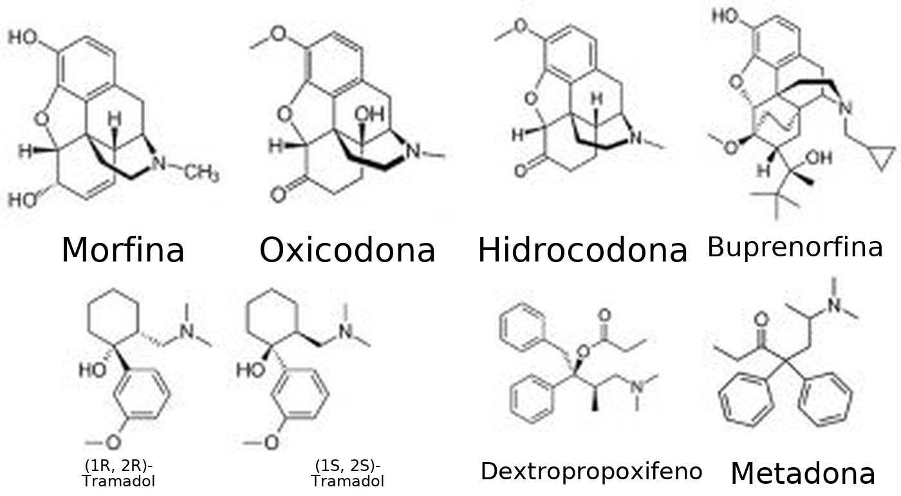
Por ejemplo, el opio (natural), la heroína (semisintética) y la metadona (sintética) actúan sobre los receptores opioides del cerebro. Por lo tanto, estos compuestos dirigidos a los receptores opioides podrían considerarse «variaciones sobre un mismo tema». Pese a su afinidad general para unirse a los receptores opioides, es importante recordar que los efectos biológicos y psicológicos pueden, de todos modos, diferir. Hay distintos tipos de receptores opioides (y pueden localizarse de manera diferencial en el cerebro), y ciertos opioides pueden unirse a algunos de estos receptores con más facilidad que a otros. Estos compuestos también pueden diferir en la rapidez con la que llegan al cerebro después de administrarse, así como en la velocidad con la que se eliminan del organismo (véase Farmacocinética, más abajo).
También es crucial recordar que el cerebro no expresa receptores opioides con el único fin de mediar los efectos de compuestos como la metadona o la heroína. El organismo ya cuenta con opioides endógenos que circulan por regiones del sistema nervioso; estas moléculas cumplen funciones esenciales, como permitirnos sentir dolor y placer y ayudar a regular la respiración (Le Merrer et al., 2009; Corder et al., 2018). En cambio, los fármacos son compuestos exógenos que se originan fuera del cuerpo humano.
Uso o efecto terapéutico
Los fármacos también pueden clasificarse según sus efectos biológicos, conductuales o psicológicos. Los que actúan sobre los receptores opioides tratan el dolor y, por lo tanto, se denominan analgésicos. Los fármacos que excitan el sistema nervioso central (SNC) y nos vuelven más alerta se denominan estimulantes (p. ej., cocaína, anfetamina, nicotina). En cambio, las sustancias con el efecto opuesto se denominan depresores (p. ej., alcohol, benzodiacepinas). Algunos tipos de alucinógenos (p. ej., mescalina, LSD, psilocibina) y de psicoterapéuticos (p. ej., antidepresivos como la sertralina y la mirtazapina) son sustancias que alteran los estados psicológicos.
También es posible que algunos fármacos correspondan a más de una categoría o que, por lo demás, no resulte claro a qué tipo pertenecen. El éxtasis (MDMA) tiene una estructura química similar a la del estimulante anfetamina, pero también puede tener efectos alucinógenos. Al éxtasis a veces también se lo denomina empatógeno–entactógeno, por el estado emocional de cercanía, apertura o simpatía que puede generar (Nichols, 2022). En todas estas sustancias, los efectos y el posible uso terapéutico dependen de la cantidad administrada y del método de administración.
Farmacocinética
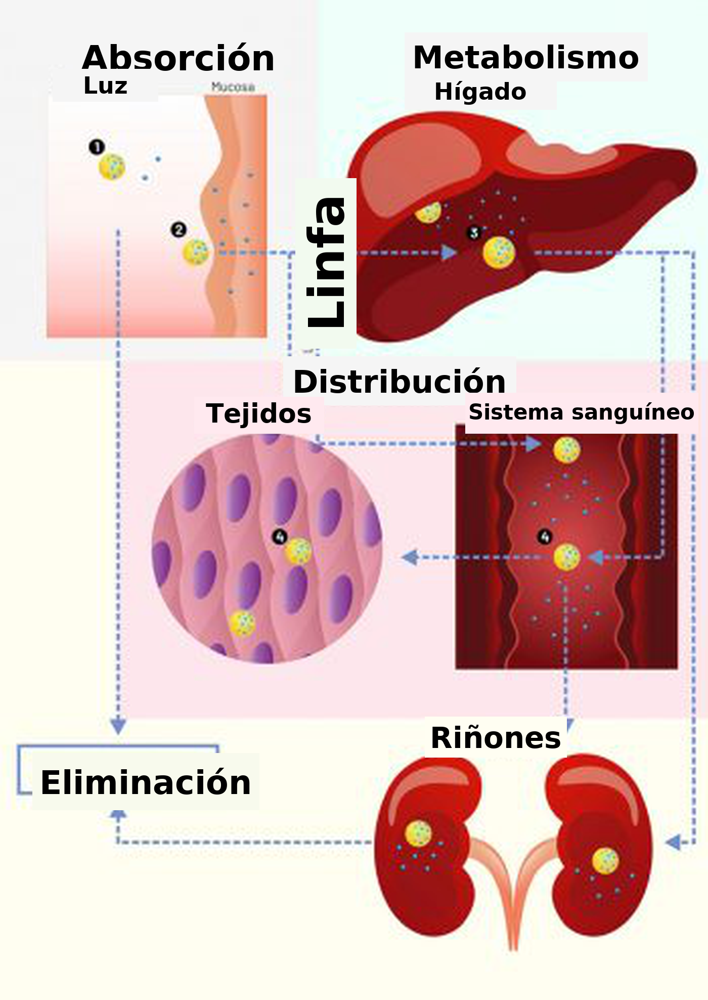
La farmacocinética es un subcampo de la farmacología que estudia cómo los fármacos:
- se absorben en el organismo,
- se distribuyen,
- se metabolizan y
- se excretan del organismo.
Pensar en el «viaje» que hace un fármaco puede ayudar a comprender estos conceptos.
Un fármaco puede ingresar primero al organismo por vías diversas. La nicotina, por ejemplo, podría fumarse en un cigarrillo o administrarse mediante un parche aplicado sobre la piel. En este módulo, los efectos de la nicotina que más nos interesa estudiar son los que ocurren en el cerebro. Vamos a revisar cómo llegan al cerebro los fármacos como la nicotina.
Por último, vas a aprender cómo los fármacos, así como sus metabolitos, pueden eliminarse del organismo con la orina.
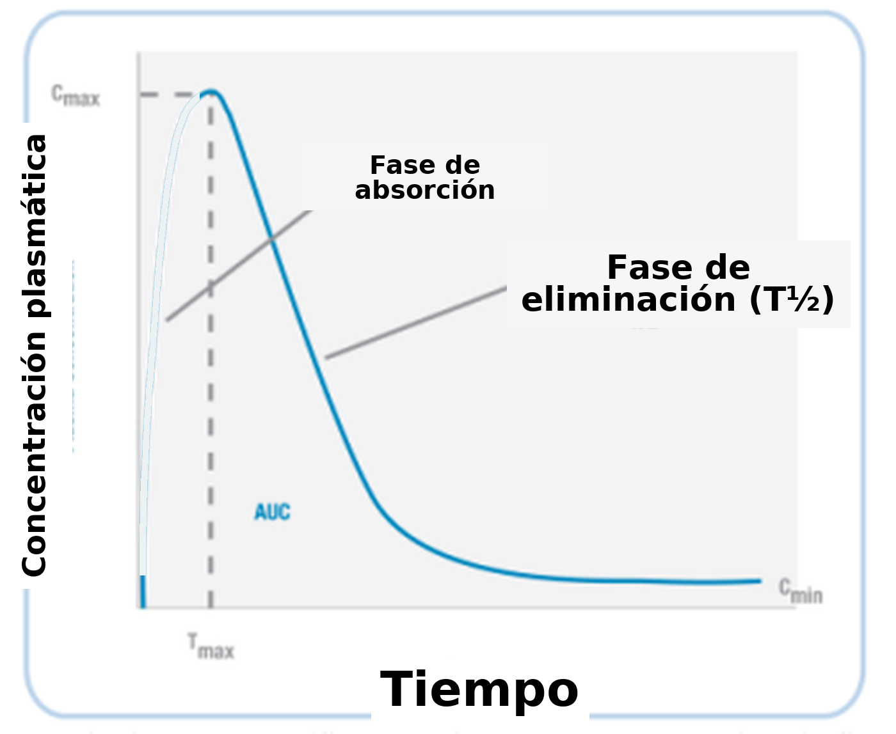
A partir de la línea de tiempo de ejemplo que se muestra (a la izquierda) para la nicotina, podemos graficar la concentración de un fármaco en el organismo (Fig. 3.37). Cuando un fármaco se administra al inicio, la concentración en el organismo aumenta (fase de absorción). Luego, en un momento determinado (Tmax), la concentración alcanza su nivel más alto (Cmax).
A continuación, durante la fase de eliminación, la concentración del fármaco en el organismo disminuye: esto ocurre porque el fármaco se metaboliza y se excreta. En algún momento, el nivel del fármaco baja hasta la mitad del valor de Cmax; el tiempo que se tarda en llegar a ese punto es la semivida del fármaco (T1/2).
Absorción y distribución
Varios factores influyen en la rapidez con que un fármaco es captado (absorbido) por el cuerpo. Tal vez el más evidente sea cómo se administra el fármaco. En la Tabla 3.1 se muestran varios métodos no invasivos e invasivos de administración de fármacos.
| Métodos no invasivos de administración de fármacos | |
| Oral | En la boca |
| Sublingual | Debajo de la lengua |
| Nasal | Absorción a través de los capilares sanguíneos que revisten las cavidades nasales |
| Rectal | Como la oral, pero puede hacerse en personas inconscientes porque no requiere tragar |
| Transdérmica | Sobre la piel, mediante un parche |
| Inhalada | Hacia los pulmones, que tienen una gran superficie y están muy vascularizados |
| Métodos invasivos de administración de fármacos | |
| Subcutánea | Debajo de la piel, pero no dentro del músculo |
| Intramuscular | Dentro del músculo |
| Intravenosa | Directamente en la vena y, por lo tanto, directamente en el torrente sanguíneo del cuerpo |
| Epidural | En el espacio entre la duramadre y las vértebras, usada en la anestesia espinal |
| Métodos de inyección usados principalmente en animales (por ejemplo, en modelos de roedores de salud mental) | |
| Intraperitoneal | Inyección en la cavidad peritoneal que rodea los intestinos |
| Intracraneal | Inyección en el tejido de una región específica del cerebro o en un ventrículo lleno de LCR; como estos fármacos se inyectan en el cerebro, no necesitan acceder al sistema circulatorio del cuerpo |
Tabla 3.1. Vías de administración
Con tantos métodos de inyección, ¿cómo se determina el mejor método para administrar un fármaco? Resulta que son muchos los factores que influyen en esa decisión. Las infusiones intravenosas (IV) pueden ser las que más rápido entran al cuerpo, pero un fármaco administrado por esta vía puede tener la duración de acción más breve en el cuerpo (una semivida corta; entra y sale rápidamente del cuerpo). Así, una administración IV de un analgésico puede producir un alivio rápido del dolor, pero el efecto puede no durar mucho. Además, algunas personas tienen miedo a las agujas, y se requiere entrenamiento para administrar inyecciones IV. Por lo tanto, las inyecciones IV no permiten que los pacientes se atiendan de manera independiente.
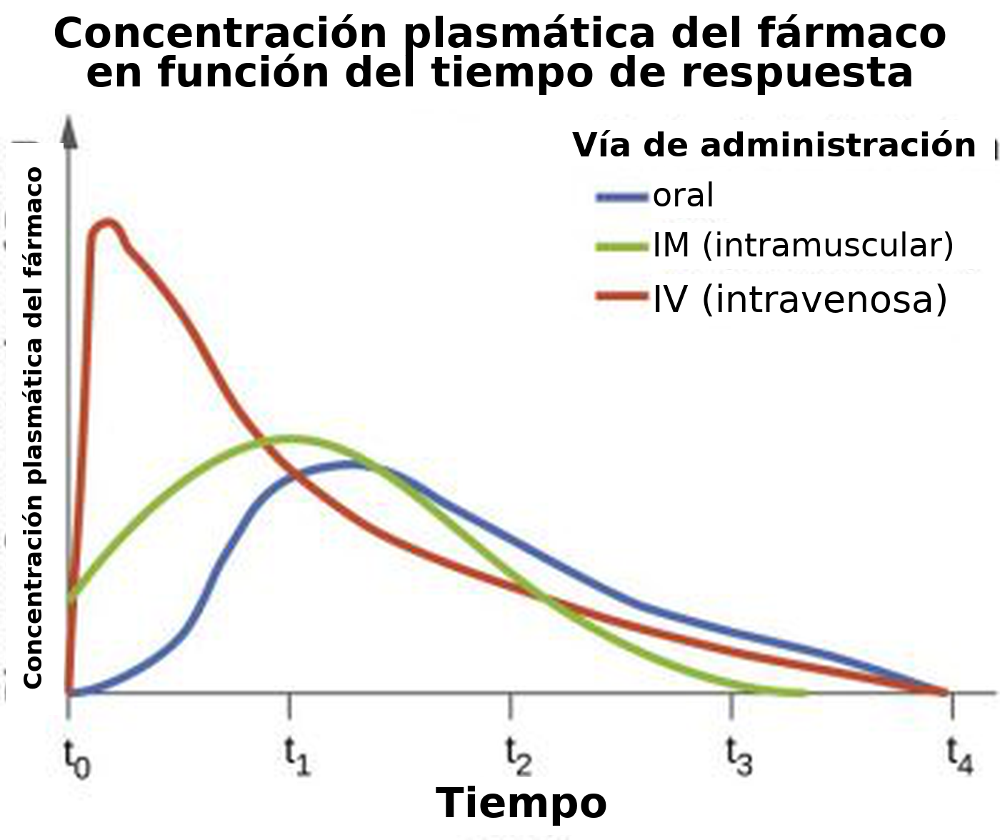
Quizás en el extremo opuesto del espectro de administración, respecto de las inyecciones IV, están las administraciones orales no invasivas. La mayoría de las personas puede tragar medicamentos, de modo que este método asegura un nivel de cuidado independiente. A diferencia de la administración IV, sin embargo, los fármacos no entran de inmediato al torrente sanguíneo cuando se toman por vía oral. Por lo tanto, los efectos deseados de los medicamentos que se tragan son más lentos que los de los fármacos administrados mediante inyecciones IV.
Lo que complica esto aún más es que los fármacos que se toman por vía oral se absorben a través del sistema gastrointestinal, y no por la boca. Esto tiene dos consecuencias principales. En primer lugar, los fármacos pueden ser destruidos inicialmente por los ácidos del estómago, lo que limita el efecto máximo que un fármaco puede tener (por ejemplo, para un medicamento específico, la Cmax puede ser más alta después de la administración IV que después de la administración oral). Además, el ambiente del estómago cambia constantemente (¡sobre todo después de las comidas!), lo que influye en cuánto del fármaco llega finalmente a otras partes del cuerpo. También, después de salir del estómago, los fármacos entran al hígado, donde experimentan el metabolismo de primer paso; esto puede destruir aún más los medicamentos administrados por vía oral y reducir la concentración del fármaco que llega al resto del cuerpo. Dicho esto, algunos medicamentos (por ejemplo, la lisdexanfetamina) están diseñados de cierta manera para que la persona trague inicialmente un profármaco inactivo (Mattingly, 2010). Cuando el profármaco experimenta el metabolismo de primer paso, se convierte en el fármaco activo (la anfetamina), que luego puede influir en la función cerebral.
Algunas otras implicaciones vitales de las vías de administración de los fármacos influyen en qué tan rápido actúan y durante cuánto tiempo lo hacen. Si un fármaco se administra en una zona del cuerpo con una gran superficie y un nivel alto de circulación sanguínea (por ejemplo, los pulmones), entonces el fármaco puede entrar más rápido al torrente sanguíneo y lograr más rápido el impacto deseado. En cambio, un fármaco sería mucho más lento para actuar y, potencialmente, actuaría durante más tiempo si primero tiene que atravesar varias capas de células antes de llegar finalmente a un vaso sanguíneo (por ejemplo, la administración transdérmica). Además, puede ocurrir la unión a depósitos si los fármacos quedan secuestrados en sitios inactivos del cuerpo, donde no hay receptores a los que unirse (por ejemplo, en las reservas de grasa); estas reservas de grasa pueden liberar lentamente un fármaco o sus metabolitos, lo que prolonga aún más sus acciones sobre el cuerpo.
Si no se inyectan por la vía IV, los fármacos pueden tardar en entrar al sistema circulatorio porque primero tienen que atravesar distintas membranas antes de ingresar al torrente sanguíneo (por ejemplo, la pared del estómago, los capilares, etc.). Si bien algunos compuestos endógenos cuentan con la ventaja de proteínas auxiliares diseñadas para transportar la molécula a través de la membrana, los fármacos exógenos por lo general no tienen este mecanismo. En cambio, los fármacos fluyen la mayoría de las veces desde zonas de alta concentración hacia regiones de menor concentración (mediante su gradiente de concentración) y finalmente atraviesan las membranas que encuentran simplemente por difusión pasiva. Como las membranas de nuestro cuerpo están hechas de lípidos (una bicapa lipídica), la capacidad de los fármacos para atravesar las membranas está determinada por su liposolubilidad y su ionización.
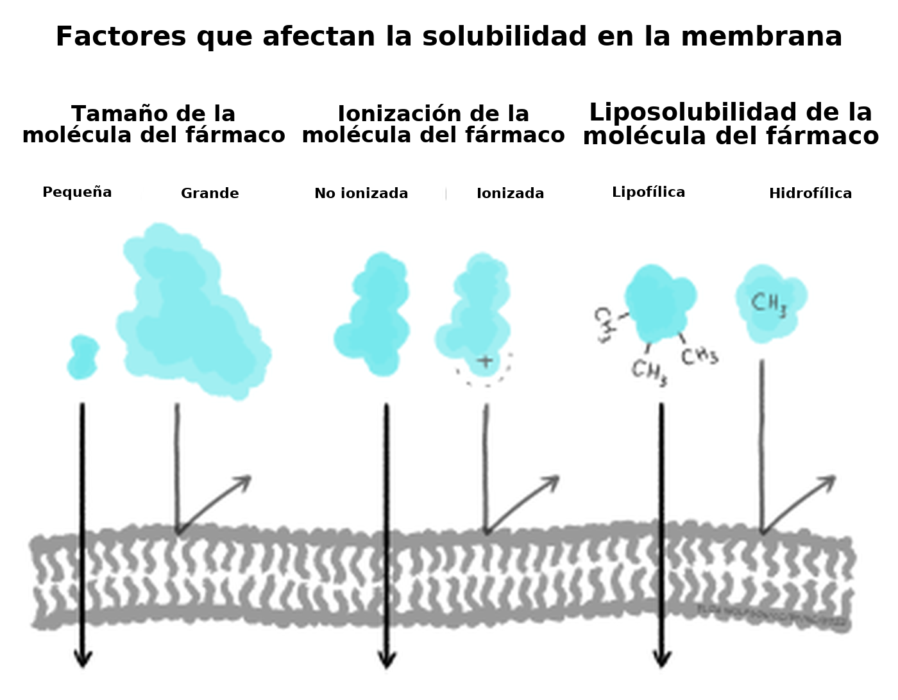
Brevemente, la mayoría de los fármacos son ácidos débiles o bases. Cuando un fármaco se disuelve en una solución, se ioniza (queda cargado). Cuanto más ionizado está un fármaco, menos liposoluble se vuelve, lo que disminuye su capacidad de atravesar las membranas celulares. En general, los fármacos que son ácidos están menos ionizados en soluciones más ácidas, mientras que los fármacos que son bases están menos ionizados en soluciones más básicas. Así, por ejemplo, el fármaco aspirina es un ácido débil. Si la aspirina se toma por vía oral en un comprimido, primero va al estómago. El estómago es fuertemente ácido (pH 2,0), de modo que la aspirina permanece principalmente en su forma no ionizada. Como no está ionizada y, por lo tanto, es liposoluble, la aspirina puede atravesar el revestimiento del estómago y entrar a un vaso sanguíneo. La sangre, sin embargo, es levemente básica (pH 7,4); esto haría que la aspirina se ionizara, lo que hace menos probable que salga del vaso porque le resulta más difícil atravesar las membranas (es decir, ahora es menos liposoluble). La situación en la que un fármaco queda «atrapado» en un compartimento porque está muy ionizado y tiene baja liposolubilidad se denomina atrapamiento iónico (Ellis & Blake, 1993). Los gradientes de concentración pueden rectificar el atrapamiento iónico; la alta concentración en un compartimento corporal, en comparación con un compartimento vecino, puede favorecer que el fármaco se desplace a través de las membranas hacia la región de menor concentración. Se usan distintas fórmulas para calcular la difusión de los fármacos, pero quedan fuera del alcance de este módulo.
Por último, para que los fármacos entren al cerebro, como ya leíste en otro lado, primero tienen que atravesar la barrera hematoencefálica (BHE). Los fármacos que son liposolubles pueden atravesar la BHE con mayor facilidad. Así, por ejemplo, como la heroína es más liposoluble que la morfina, puede atravesar más rápido la BHE y llegar al cerebro (Pimentel et al., 2020). Por lo tanto, la heroína tiende a actuar más rápido que la morfina; esto puede contribuir a sus cualidades adictivas.
Los pacientes usan medicamentos prescritos para mejorar la salud mental porque los fármacos influyen en la función cerebral. Sin embargo, como se describió más arriba, hacer llegar fármacos directamente al cerebro es un desafío. Como los fármacos se distribuyen por nuestro cuerpo a través del torrente sanguíneo, actúan en la periferia antes de llegar al cerebro; esto puede producir efectos secundarios no deseados. Así, parte del trabajo de un psicofarmacólogo es desarrollar medicamentos que puedan mejorar el bienestar mental mediante sus acciones sobre el cerebro y, a la vez, minimizar los efectos indeseables y no deseados.
Metabolismo y excreción
Ya analizamos una forma de inactivar los fármacos: el metabolismo de primer paso en el hígado, donde las enzimas microsómicas pueden degradar los medicamentos en compuestos más simples. Mediante la biotransformación, el hígado puede metabolizar los fármacos de modo que queden más ionizados; esto hace que pierdan su liposolubilidad, lo que impide aún más que atraviesen la BHE para entrar al cerebro. Por último, los fármacos metabolizados son excretados por el cuerpo principalmente a través del riñón (orina), pero otros productos de excreción incluyen la bilis, las heces, el aliento, el sudor y la saliva.
Enzimas especiales, tanto en la sangre como en el cerebro, también pueden degradar fármacos. Por ejemplo, cuando está en el cerebro, la heroína puede metabolizarse en morfina. Esto plantea un ejemplo importante – los fármacos pueden metabolizarse en moléculas que también son biológicamente activas. Si bien la morfina y la heroína pueden tener efectos similares, los metabolitos de otros fármacos pueden tener efectos opuestos. Por ejemplo, el alcohol se metaboliza en acetaldehído mediante la enzima alcohol deshidrogenasa (Fig. 3.39). Si el acetaldehído se acumula en el cuerpo, puede hacer que una persona se sienta mal. El propio acetaldehído es metabolizado por la aldehído deshidrogenasa en ácido acético. Hay fármacos para el trastorno por consumo de alcohol que bloquean la aldehído deshidrogenasa (disulfiram) y, por lo tanto, producen un aumento de los niveles de acetaldehído en el cuerpo (Veverka et al., 1997). Como los efectos del disulfiram son desagradables, se cree que la administración de este fármaco podría evitar que las personas beban alcohol en primer lugar. Si bien esto puede parecer útil, la adherencia a este tratamiento suele ser un problema (Mutschler et al., 2016).
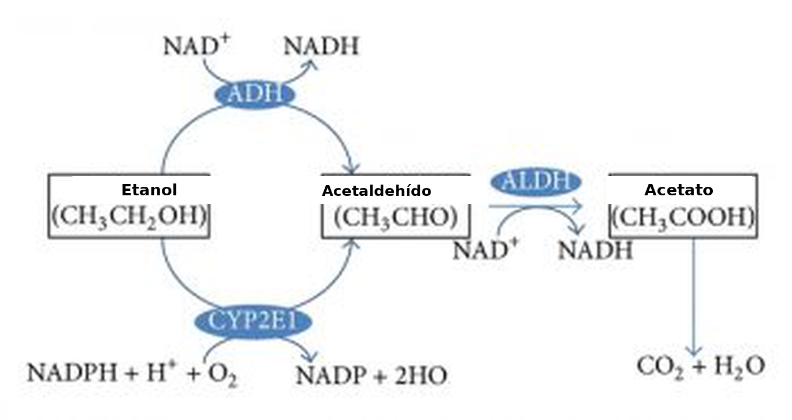
Por último, también hay una variación individual significativa en el metabolismo. Por ejemplo, puede haber diferencias según el sexo en los niveles de ciertas enzimas. Las mujeres pueden tener niveles más bajos de alcohol deshidrogenasa gástrica que los varones – así, para una dosis dada de alcohol, entra más alcohol al torrente sanguíneo (Frezza et al., 1990). También hay adaptación individual – los bebedores crónicos tienen niveles más altos de alcohol deshidrogenasa. En este ejemplo, alguien con un trastorno por consumo de alcohol podría necesitar más alcohol que otra persona para alcanzar los efectos deseados del alcohol – este es un ejemplo de tolerancia que resulta de un estado de inducción enzimática (aumento de la tasa de metabolismo debido a una mayor expresión de los genes de las enzimas que metabolizan fármacos; la tolerancia se analiza de nuevo más adelante en este capítulo). La edad también influye en el metabolismo; las personas mayores tienen una función hepática reducida, y esto puede dar lugar a efectos exagerados del alcohol (Meier & Seitz, 2008). Por último, la genética también puede influir en el metabolismo; algunas personas tienen un polimorfismo en el gen que codifica la aldehído deshidrogenasa – la falta de esta enzima significa que hay una mayor acumulación de acetaldehído y, por lo tanto, más de sus efectos desagradables (Goedde & Agarwal, 1987).
Farmacodinamia
Mientras que la farmacocinética se centra en cómo un fármaco se distribuye por el cuerpo y se elimina, la farmacodinamia estudia el efecto que tiene un fármaco una vez que llega a su blanco en el cuerpo. Así, mientras que la farmacocinética explica cómo un fármaco finalmente atraviesa la BHE para llegar al cerebro, la farmacodinamia describe a qué tipo de receptor se une un fármaco en el cerebro y qué consecuencia tiene esto sobre la señalización neuronal. Cabe destacar que, si bien este ejemplo habla de un fármaco que tiene como blanco un receptor, los medicamentos pueden interactuar con muchos tipos distintos de moléculas en el cerebro e influir en la función cerebral de numerosas maneras. La figura de abajo da algunos ejemplos de cómo un fármaco puede afectar la transmisión sináptica. Una vez más, es crucial reconocer que los fármacos actúan sobre mecanismos celulares que ya existen para ayudarnos a sobrevivir. Por ejemplo, la nicotina se une a un receptor ionotrópico que habitualmente une el neurotransmisor acetilcolina. Este receptor en particular también une nicotina, de modo que lo llamamos receptor nicotínico de acetilcolina.
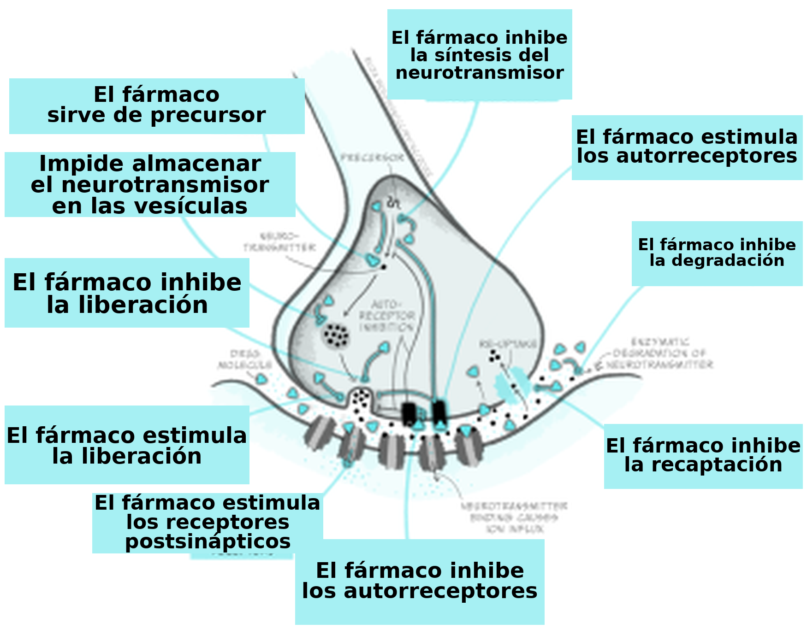
Fármacos agonistas y curvas dosis-respuesta
A lo largo de este módulo y de los siguientes, vas a aprender sobre muchos tipos distintos de fármacos y su impacto en la biología cerebral. Por ahora, vamos a centrarnos en dos clases generales de fármacos: los agonistas y los antagonistas que se unen a receptores. Los receptores son moléculas a las que se une un fármaco (o un ligando endógeno) y que inician un efecto biológico. «Receptor» es un término muy general – a menudo pensamos en los receptores como proteínas que se insertan en la membrana de las células, pero esto no tiene por qué ser así (los receptores también pueden estar en el citoplasma, por ejemplo). Algunos ejemplos de dónde pueden ubicarse los receptores se muestran en la Fig. 3.41. Por ejemplo, los receptores pueden encontrarse en las neuronas postsinápticas (por ejemplo, los receptores nicotínicos de acetilcolina) y en las terminales presinápticas (conocidos como autorreceptores, que ayudan a autorregular la liberación de neurotransmisor; por ejemplo, el receptor de dopamina de tipo D3). Los fármacos a menudo no se limitan a unirse a un receptor en particular – con frecuencia se los considera «sucios», ya que se unen a múltiples tipos de receptores en grados variables en todo el cuerpo. Esta es una razón por la que los fármacos suelen tener efectos secundarios no deseados. Los medicamentos antipsicóticos de segunda generación son notorios por su efecto sobre múltiples tipos de receptores, y esto puede explicar por qué hay una variación individual significativa en su tolerabilidad (Kishimoto et al., 2019).
Los fármacos que se consideran agonistas pueden unirse a un receptor e iniciar algún tipo de efecto biológico, como poner en marcha una cascada intracelular de eventos de señalización. Por esto, a menudo pensamos que los agonistas actúan mediante un mecanismo de «llave y cerradura» – insertar un fármaco en un receptor permite que ocurran eventos (véase la Fig. 3.45, arriba). Es fundamental reconocer que los fármacos tienden a unirse débilmente a los receptores y pueden disociarse rápidamente del receptor. Por lo tanto, el impacto agudo que tienen los fármacos es reversible. Esto es importante porque, cuando un fármaco ya no está unido a un receptor, el ligando endógeno de ese receptor puede volver a unirse.
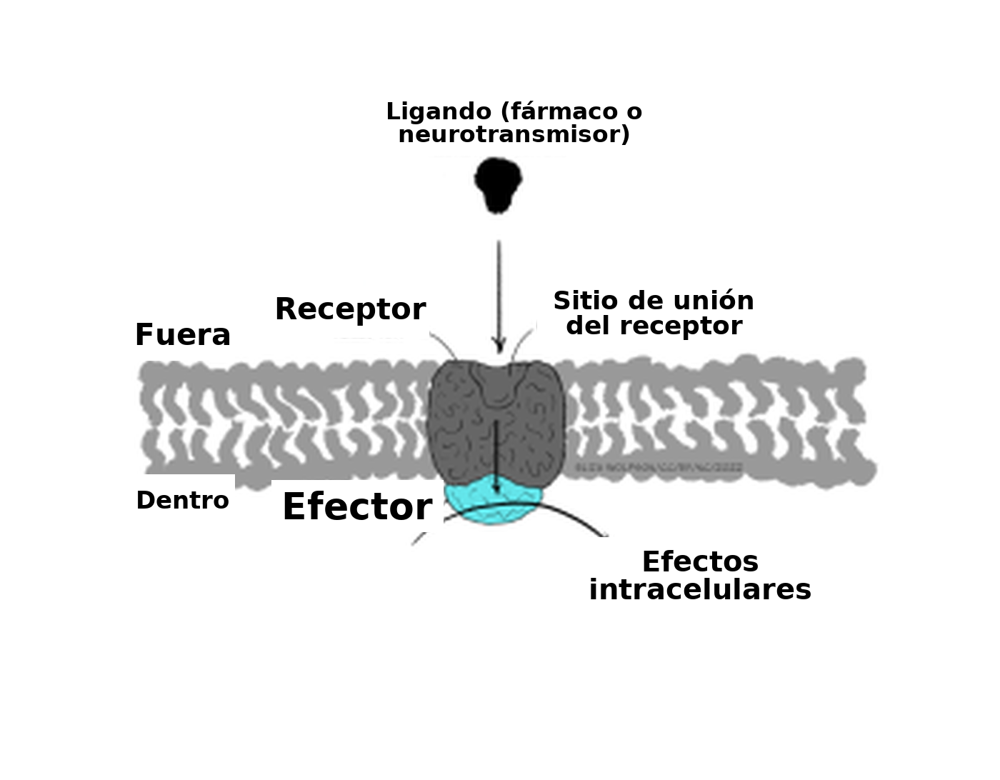
La magnitud del impacto biológico de un fármaco sobre el cerebro depende, en parte, de la cantidad de receptores disponibles para la unión del fármaco. Por lo tanto, aumentar la cantidad de moléculas del fármaco en el cerebro también aumenta la probabilidad de que se unan a un receptor. Si bien las dosis más altas de un fármaco pueden tener un impacto biológico mayor, siempre hay un límite. El efecto máximo de un fármaco se alcanza cuando el fármaco está unido de manera continua a todos los receptores; es decir, un fármaco alcanza su efecto máximo cuando todos los receptores están ocupados. Esto se conoce como la ley de acción de masas y se puede describir mediante una curva dosis-respuesta.
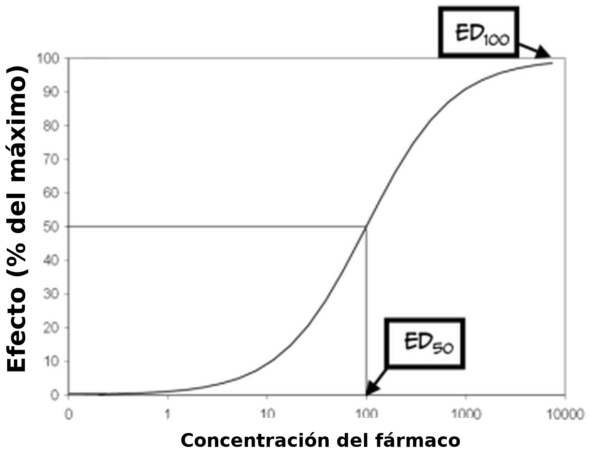
Como podés ver en la Fig. 3.43 de arriba, las curvas dosis-respuesta tienen una forma de S típica. Por lo general se grafican con una función logarítmica de la «dosis» del fármaco administrado en el eje x y una respuesta medida en el eje y. Al mirar la figura, podés ver que, a partir de cierto punto, aumentar la dosis del fármaco ya no produce una respuesta mayor; en ese punto (conocido como dosis eficaz 100, ED100), el fármaco ocupa todos los receptores disponibles y, por lo tanto, ejerce su efecto máximo. Otro punto importante del gráfico es el ED50 del fármaco. El ED50 es una medida de la potencia del fármaco: representa la dosis que produce la mitad del efecto máximo. Como alternativa, el ED50 puede caracterizar la cantidad de un fármaco que produce un efecto en la mitad de la población a la que se le administró. Por último, también es fundamental recordar que la mayoría de los medicamentos tienen diversos efectos sobre el organismo e incluso pueden interactuar con múltiples receptores. La unión al receptor A puede influir en la percepción del dolor, mientras que la unión al receptor B puede influir en la presión arterial. Si el receptor B es más abundante que el receptor A, la dosis necesaria para afectar al máximo la presión arterial sería más alta que la necesaria para alterar la percepción del dolor. En consecuencia, también habría un valor de ED50 distinto para cada respuesta.
Los fármacos suelen tener efectos secundarios indeseables o peligrosos; las curvas dosis-respuesta también se pueden usar para caracterizar estos efectos. Por ejemplo, un efecto no deseado de un fármaco es la sedación. La dosis del medicamento que produce este efecto en el 50% de los sujetos se denomina dosis tóxica 50 (TD50). Con esta información, los médicos pueden calcular un margen de seguridad, conocido como el índice terapéutico (o ventana terapéutica) (TI = TD50 / ED50), que indica cuánto se puede aumentar con seguridad la dosis de un fármaco. Así como los fármacos pueden tener múltiples efectos deseables, también puede haber numerosos efectos tóxicos, cada uno con un TD50 distinto. Por último, en la fórmula del índice terapéutico, el TD50 se puede reemplazar por la dosis letal 50 (LD50), que es la dosis de un fármaco que puede matar al 50% de los sujetos.
Comparación de las curvas dosis-respuesta de los fármacos agonistas
Hasta ahora nos ocupamos sobre todo de la eficacia de los fármacos: el efecto máximo que pueden producir. Los fármacos también difieren en potencia: cuánto medicamento hace falta para producir un efecto. La Fig. 3.43 muestra las curvas dosis-respuesta de tres fármacos opioides con eficacias similares; la hidromorfona, la morfina y la codeína pueden reducir el dolor de manera eficaz. Sin embargo, para aliviar el dolor se necesitan dosis distintas de estos fármacos: hace falta una concentración más alta de codeína que de morfina. Por eso, el ED50 de cada uno de estos fármacos también es distinto. Los fármacos con un ED50 más bajo se consideran más potentes que los fármacos con un ED50 más alto.
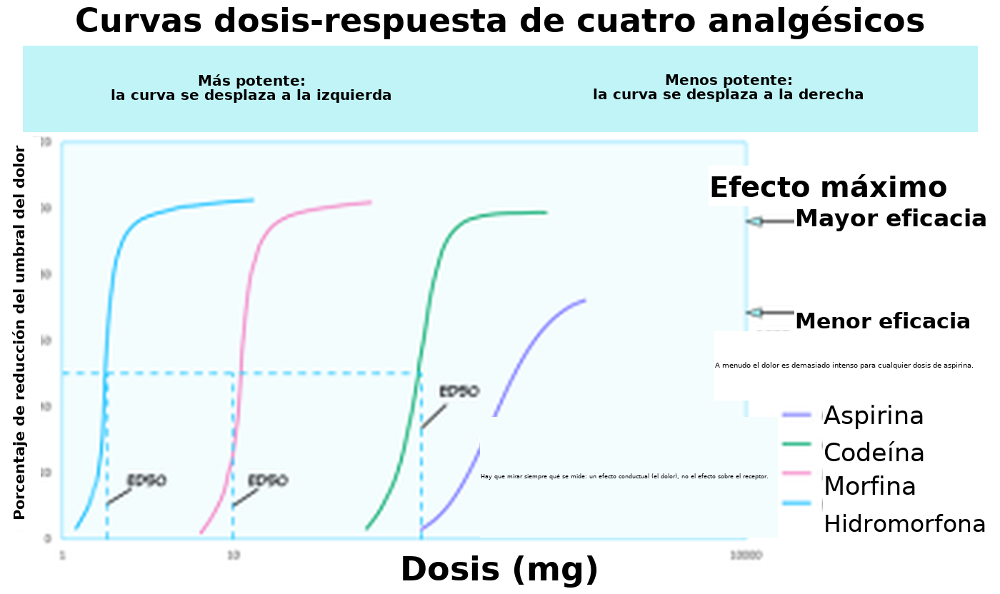
La figura también muestra la curva dosis-respuesta de la aspirina, un fármaco no opioide que se puede usar para reducir el dolor. No solo hace falta una dosis más alta de aspirina para alcanzar un alivio del dolor similar al de opioides como la morfina, sino que ninguna dosis de aspirina puede aliviar el dolor por completo. Así, la aspirina es a la vez menos potente y menos eficaz que la morfina para aliviar el dolor.
Es probable que haya varias razones para estas diferencias de potencia entre fármacos. Por ejemplo, es probable que la farmacocinética difiera entre medicamentos; si un fármaco tiene mayor capacidad para atravesar la BHE, entonces más moléculas de ese fármaco se unen a los receptores, y ese fármaco va a tener una eficacia superior. Además, algunos fármacos pueden tener mayor afinidad por los receptores que otros; es probable que un fármaco con mayor afinidad permanezca unido al receptor durante más tiempo y, así, siga ejerciendo un efecto. Es probable que las diferencias de eficacia entre fármacos indiquen que esos medicamentos actúan mediante mecanismos distintos. Si bien tanto la morfina como la aspirina alivian el dolor, la morfina actúa uniéndose a los receptores opioides, mientras que la aspirina, en cambio, inactiva la enzima ciclooxigenasa.
Fármacos antagonistas
La unión de los fármacos agonistas a los receptores puede causar una respuesta biológica; por eso, se dice que tienen actividad intrínseca. En cambio, los antagonistas se unen a los receptores y contrarrestan el efecto de un agonista o de un ligando endógeno sobre un receptor. Por lo tanto, la efectividad de un antagonista se puede medir observando cómo su administración modifica las curvas dosis-respuesta de los fármacos agonistas. A diferencia de los fármacos agonistas, que siguen un mecanismo de «llave y cerradura» para iniciar efectos biológicos (Fig. 3.45, fila superior), puede resultar útil imaginar un antagonista como una llave que entra en la cerradura pero no gira (Fig. 3.45, fila inferior).
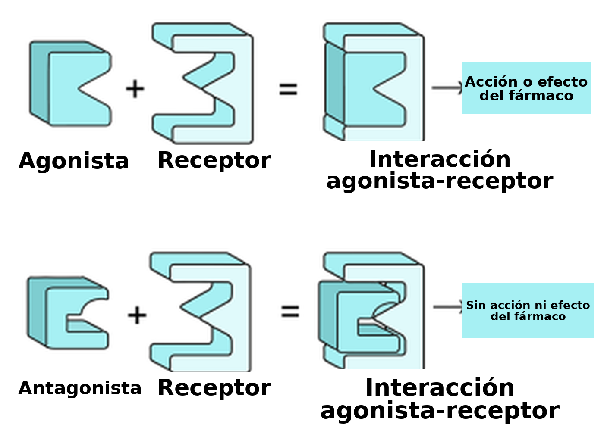
Hay un par de categorías de antagonistas con las que tenés que familiarizarte (Fig. 3.46). Antagonistas competitivos se unen al mismo sitio de un receptor que un agonista o un ligando endógeno. Por eso, este tipo de antagonista compite con el ligando endógeno por los sitios de unión disponibles. Por lo tanto, habría que administrar una dosis más alta del fármaco agonista para superar la presencia de un antagonista; esto desplazaría el ED50 de la curva dosis-respuesta del agonista hacia la derecha. En teoría, si hay tanto agonista que absolutamente ninguna molécula de antagonista puede unirse a un receptor, y si el agonista ocupa todos los receptores disponibles, entonces el agonista puede alcanzar el mismo ED100 que en ausencia de un antagonista.
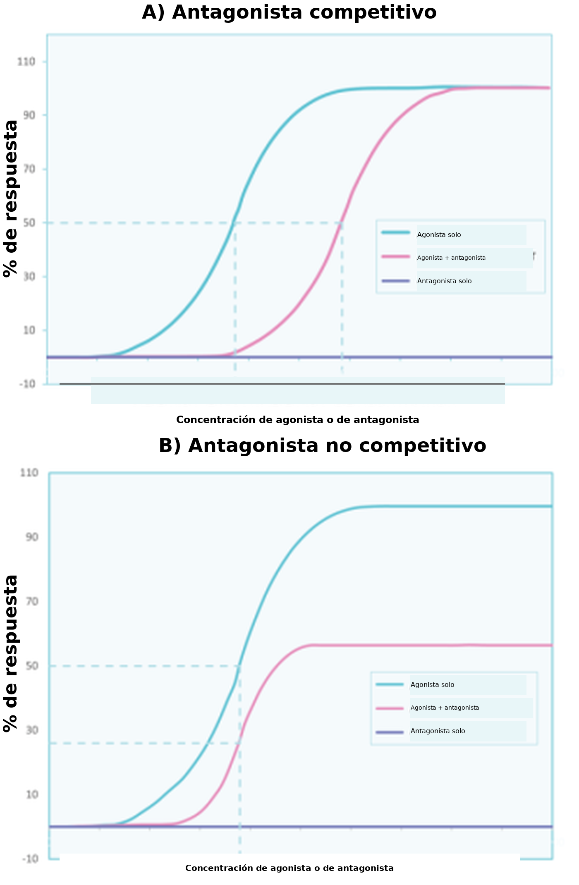
A diferencia de los antagonistas competitivos, los agonistas no competitivos se unen a una parte del receptor distinta de la de un agonista o un ligando endógeno; por lo tanto, no compiten por la unión. En la práctica, los antagonistas no competitivos hacen que los receptores no estén disponibles para la acción del fármaco agonista. Si bien los antagonistas no competitivos siguen desplazando hacia la derecha las curvas dosis-respuesta de los agonistas (Fig. 3.46 B), también pueden disminuir el efecto máximo posible de un agonista o de un ligando endógeno (es decir, reducen el ED100). Como los antagonistas no competitivos se unen a sitios del receptor distintos de los de los fármacos agonistas, aumentar simplemente la dosis de un agonista no puede superar este bloqueo.
Al hablar de los agonistas, mencionamos que la mayoría de los fármacos forman enlaces débiles con los receptores. Esto significa que los efectos del fármaco son reversibles, porque el fármaco puede disociarse con facilidad de un receptor. La mayoría de los fármacos antagonistas actúan de manera similar, y su interacción con los receptores es transitoria. Sin embargo, los efectos de algunos fármacos antagonistas son irreversibles: forman un enlace duradero con los receptores. Un ejemplo de un antagonista de este tipo es la alfa-bungarotoxina (del veneno del búngaro rayado), que bloquea los receptores de acetilcolina en las uniones neuromusculares. Esto puede provocar parálisis, insuficiencia respiratoria y muerte. Sin embargo, hay un escenario hipotético para superar los efectos de los antagonistas irreversibles: sintetizar receptores nuevos. Supongamos que se forman suficientes receptores nuevos y que se vuelven funcionales, y que el antagonista irreversible ya no está en el organismo (por ejemplo, porque se eliminó por la orina). En ese caso, estos receptores nuevos pueden empezar a restaurar la función biológica (cuando se unen a agonistas o a ligandos endógenos).
Otros tipos de agonistas
Hay otros tres tipos de fármacos «agonistas» que podés encontrar en tus estudios. En primer lugar, los agonistas indirectos (o moduladores alostéricos) pueden unirse a una parte del receptor distinta de la de un agonista pleno (habitual) o de un ligando endógeno. Estos agonistas indirectos ayudan a los agonistas plenos, o a los ligandos endógenos, a ejercer sus efectos plenos. Las benzodiacepinas son un ejemplo de agonista indirecto porque se unen a los receptores GABAA y aumentan la conductancia del canal cuando el GABA (el ligando endógeno) también está unido.
En segundo lugar, los agonistas parciales se unen al mismo sitio del receptor que los fármacos agonistas, pero tienen baja eficacia (Fig. 3.47). Por lo tanto, definir un fármaco como agonista parcial es relativo: la respuesta a un agonista parcial tiene que ser menor que la respuesta máxima producida por un agonista pleno. Es importante tener en cuenta que, cuando se administran al mismo tiempo agonistas plenos y parciales, compiten por el mismo sitio de unión del receptor. En este caso, como el agonista parcial es menos eficaz para producir una respuesta biológica, antagoniza el efecto del agonista pleno. En otras palabras, el organismo no puede producir una respuesta plena al agonista, porque los agonistas parciales (que son menos eficaces) ocupan los sitios de unión del agonista. Este efecto se puede superar si se aumenta la dosis de un agonista pleno, de modo que pueda desplazar al agonista parcial de los sitios de unión del receptor. Por estos efectos, a los agonistas parciales a veces se los llama fármacos agonistas-antagonistas mixtos .
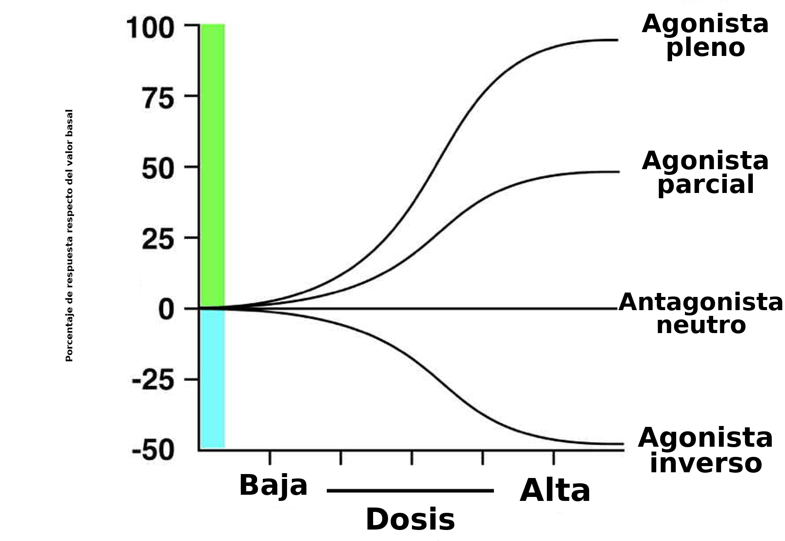
El último tipo de fármaco del que vamos a hablar es el agonista inverso. Algunos receptores del organismo tienen una actividad endógena considerable, incluso cuando no hay ligandos unidos a ellos. Esta observación rompe la regla general de que los receptores no tienen actividad cuando no están unidos a un ligando. Los agonistas inversos reducen esta actividad espontánea, lo que da lugar a una curva dosis-respuesta descendente (Fig. 3.47). Aunque su mecanismo es complejo, algunos alcaloides de beta-carbolina se consideran agonistas inversos. Los alcaloides de beta-carbolina se unen a los receptores GABAA en el mismo sitio que las benzodiacepinas. Mientras que las benzodiacepinas facilitan la conductancia al cloruro a través del canal del receptor y disminuyen la ansiedad, los alcaloides de beta-carbolina tienen los efectos opuestos cuando se administran (Evans & Lowry, 2007). Los efectos ansiogénicos de estos agonistas inversos hacen que algunas personas los llamen «antibenzodiacepinas». En cambio, los fármacos que son antagonistas competitivos del receptor GABAA no influyen por sí solos en la función del receptor, sino que bloquean la capacidad de los agonistas plenos, parciales o inversos de alterar la actividad del receptor.
Efectos del uso repetido de fármacos
Si a una persona se le administra de manera repetida una dosis específica de un fármaco agonista, puede cambiar la capacidad del fármaco para ejercer efectos sobre el organismo. Si los efectos del fármaco disminuyen, esto se conoce como tolerancia. Así, si una persona desarrolló tolerancia a un fármaco determinado, puede hacer falta aumentar la dosis para que el fármaco siga siendo eficaz. A veces, con las administraciones repetidas, los efectos se vuelven cada vez mayores; este hallazgo se conoce como sensibilización o tolerancia inversa. Como los fármacos pueden tener múltiples efectos sobre el sistema nervioso y la conducta, algunas respuestas pueden presentar tolerancia, mientras que otras se sensibilizan. Por ejemplo, la administración repetida de anfetamina puede producir tolerancia a los efectos euforizantes de la droga, pero sensibilización a determinados efectos psicomotores o asociados con la psicosis.
Ejercicio
Para ayudarte a pensar en estos conceptos, intentá dibujar curvas dosis-respuesta del desarrollo de la tolerancia y la sensibilización. Recordá que, con la tolerancia, hace falta más fármaco para lograr el mismo efecto. En cambio, con la sensibilización, hace falta menos fármaco para lograr el mismo efecto.
Como ciertos fármacos actúan sobre receptores similares del sistema nervioso, a veces se produce tolerancia cruzada , en la que un fármaco también reduce los efectos de otro. Por ejemplo, las personas que beben alcohol pueden verse menos afectadas por las benzodiacepinas, ya que el efecto de ambos tipos de sustancias depende de la transmisión del GABA y de la expresión de los receptores de GABA (Lê et al., 1986). Los mecanismos que subyacen a la sensibilización a los fármacos podrían estar un poco menos estudiados que los de la tolerancia. Un ejemplo de sensibilización, sin embargo, es la capacidad de ciertas sustancias psicoactivas (como la anfetamina) de aumentar los niveles del neurotransmisor dopamina a lo largo de las administraciones (Singer et al., 2009). Vas a aprender más sobre la tolerancia y la sensibilización a las drogas cuando estudies la adicción.
Resumen
Ideas clave
- Existen múltiples sistemas de clasificación de los fármacos
- La farmacocinética comprende la absorción, la distribución y la eliminación de los fármacos del organismo
- La farmacodinamia comprende cómo los fármacos interactúan con los receptores y alteran el estado funcional del receptor.
En este capítulo aprendiste sobre distintas categorías de fármacos y cómo impactan en el organismo mediante procesos farmacocinéticos y farmacodinámicos (Fig. 3.48). Con frecuencia se dedican módulos enteros a la farmacología, y muchos de los conceptos que describimos se pueden cuantificar aún más mediante fórmulas matemáticas, lo que permite comparaciones precisas entre fármacos. Cuando estudies distintas afecciones psiquiátricas y sus tratamientos biomédicos, asegurate de volver a este capítulo para ayudarte a entender cómo los medicamentos pueden usarse en muchas personas para mejorar el bienestar mental.
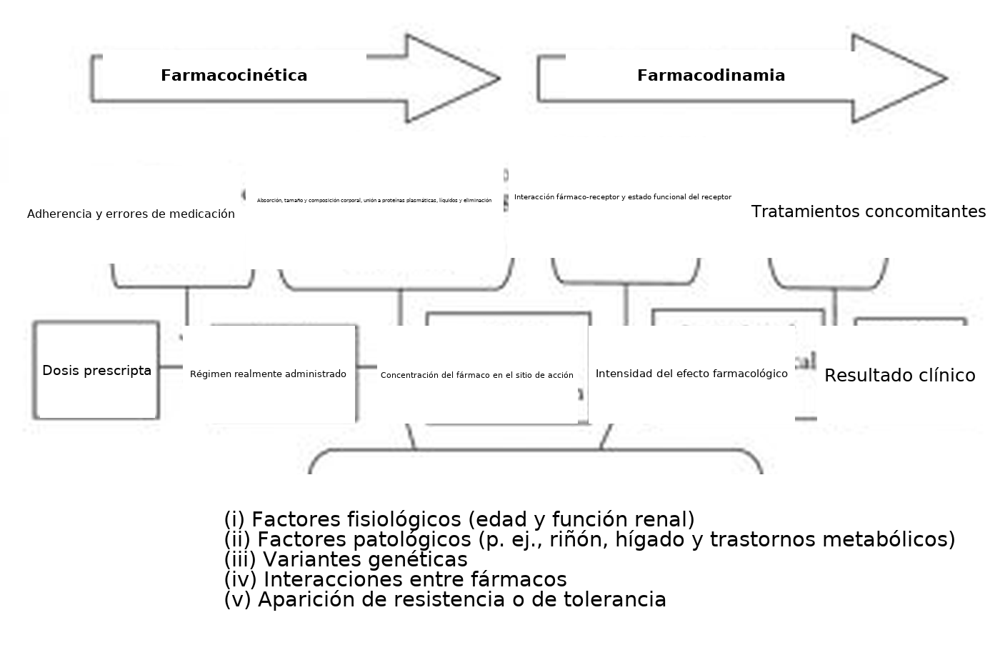
Referencias
Corder, G., Castro, D. C., Bruchas, M. R., & Scherrer, G. (2018). Endogenous and exogenous opioids in pain. Annual Reviews of Neuroscience, 41, 453–473. https://dx.doi.org/10.1146/annurev-neuro-080317-061522.
Ellis, G. A., & Blake, D. R. (1993). Why are non-steroidal anti-inflammatory drugs so variable in their efficacy? A description of ion trapping. Annals of the Rheumatic Diseases, 52, 241–243. https://dx.doi.org/10.1136/ard.52.3.241.
Evans, A. K., & Lowry, C. A. (2007). Pharmacology of the beta-carboline FG-7,142, a partial inverse agonist at the benzodiazepine allosteric site of the GABA A receptor: neurochemical, neurophysiological, and behavioral effects. CNS Drug Reviews, 13(4), 475–501. https://doi.org/10.1111/j.1527-3458.2007.00025.x
Frezza, M., di Padova, C., Pozzato, G., Terpin, M., Baraona, E., & Lieber, C. S. (1990). High blood alcohol levels in women. The role of decreased gastric alcohol dehydrogenase activity and first-pass metabolism. The New England Journal of Medicine, 322(2), 95–99. https://doi.org/10.1056/NEJM199001113220205
Goedde, H. W., & Agarwal, D. P. (1987). Polymorphism of aldehyde dehydrogenase and alcohol sensitivity. Enzyme, 37(1–2), 29–44. https://doi.org/10.1159/000469239
Kishimoto, T., Hagi, K., Nitta, M., Kane, J. M., & Correll, C. U. (2019). Long-term effectiveness of oral second-generation antipsychotics in patients with schizophrenia and related disorders: a systematic review and meta-analysis of direct head-to-head comparisons. World Psychiatry, 18(2), 208-224. https://doi.org/10.1002/wps.20632
Lê, A. D., Khanna, J. M., Kalant, H., & Grossi, F. (1986). Tolerance to and cross-tolerance among ethanol, pentobarbital and chlordiazepoxide. Pharmacology, Biochemistry, and Behavior, 24(1), 93–98. https://doi.org/10.1016/0091-3057(86)90050-x
Le Merrer, J., Becker, J. A. J., Befort, K., & Kieffer, B. L. (2009). Reward processing by the opioid system in the brain. Physiological Reviews, 89, 1379–1412. https://dx.doi.org/10.1152/physrev.00005.2009.
Mattingly, G. (2010). Lisdexamfetamine dimesylate: a prodrug stimulant for the treatment of ADHD in children and adults. CNS Spectrums, 15, 315–325. https://dx.doi.org/10.1017/S1092852900027541.
Meier, P., & Seitz, H. K., (2008). Age, alcohol metabolism and liver disease. Current Opinion in Clinical Nutrition and Metabolic Care, 11(1), 21-26. https:/doi.org/10.1097/MCO.0b013e3282f30564.
Mutschler, J., Grosshans, M., Soyka, M., & Rösner, S. (2016). Current findings and mechanisms of action of disulfiram in the treatment of alcohol dependence. Pharmacopsychiatry, 49(4), 137–141. https://doi.org/10.1055/s-0042-103592
Nichols, D. E. (2022). Entactogens: How the name for a novel class of psychoactive agents originated. Frontiers in Psychiatry, 13, 863088. https://dx.doi.org/10.3389/fpsyt.2022.863088.
Pimentel, E., Sivalingam, K., Doke, M., & Samikkannu, T. (2020). Effects of drugs of abuse on the blood-brain barrier: A brief overview. Frontiers in Neuroscience 14, 513. https://dx.doi.org/10.3389/fnins.2020.00513.
Singer, B. F., Tanabe, L. M., Gorny, G., Jake-Matthews, C., Li, Y., Kolb, B., & Vezina, P. (2009). Amphetamine-induced changes in dendritic morphology in rat forebrain correspond to associative drug conditioning rather than nonassociative drug sensitization. Biological Psychiatry, 65(10), 835–840. https://doi.org/10.1016/j.biopsych.2008.12.020
UK Government (2022). List of most commonly encountered drugs currently controlled under the misuse of drugs legislation. (Accessed 13 Dec 2022). https://www.gov.uk/government/publications/controlled-drugs-list–2/list-of-most-commonly-encountered-drugs-currently-controlled-under-the-misuse-of-drugs-legislation
Veverka, K. A., Johnson, K. L., Mays, D. C., Lipsky, J. J., & Naylor, S. (1997). Inhibition of aldehyde dehydrogenase by disulfiram and its metabolite methyl diethylthiocarbamoyl-sulfoxide. Biochemical Pharmacology, 53, 511–518. https://doi.org/10.1016/S0006-2952(96)00767-8
Un fármaco es una sustancia capaz de producir un cambio fisiológico o psicológico en una persona al actuar sobre procesos biológicos.
El estudio de cómo los fármacos inciden en el cerebro y la conducta.